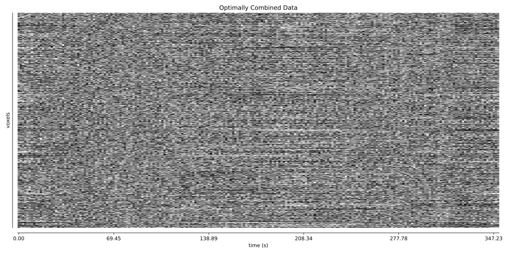
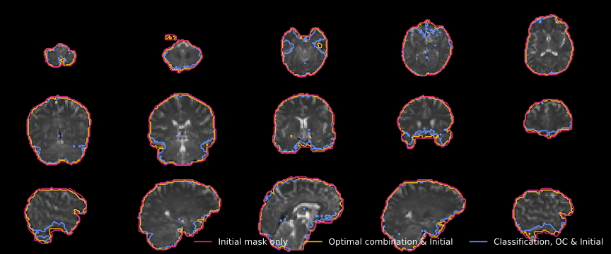
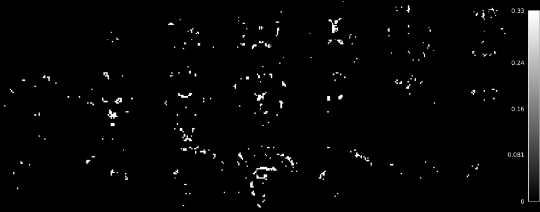
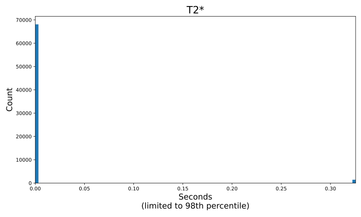
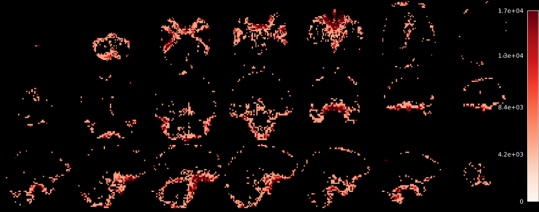
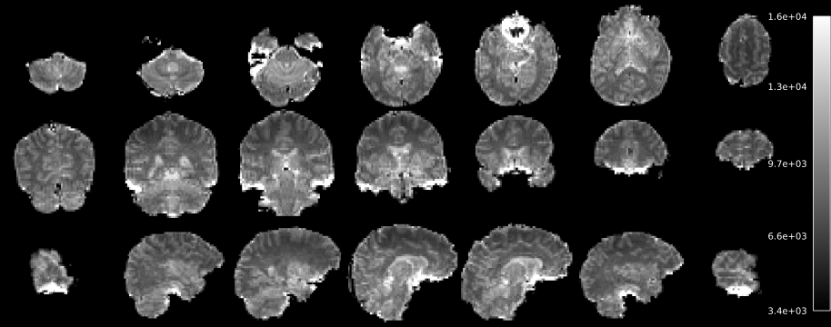
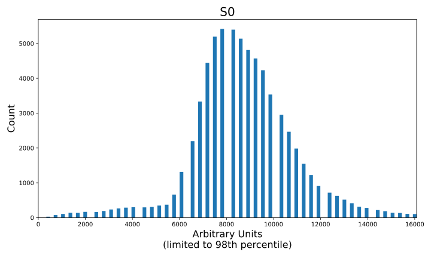
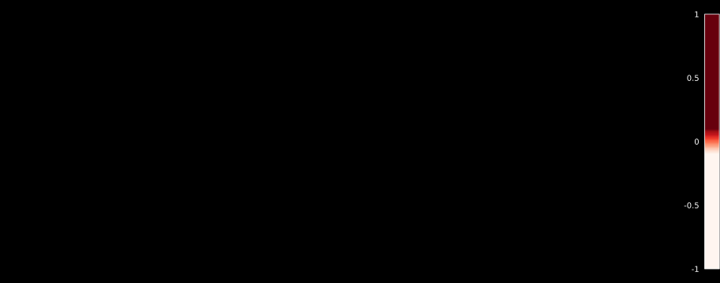

Rica is an interactive web-based tool for exploring ICA components
with 3D brain visualization and
can be used to manually change component classifications.
To view these results in Rica locally, run this command in your output directory:
python open_rica_report.py
This will download Rica (if needed), start a local server, and open your browser.
ICA components
Carpet plots

Adaptive mask

T2*


T2* Estimate Variance

S0


S0 Estimate Variance

T2* and S0 Estimate Covariance
T2* and S0 model fit (RMSE). (Scaled between 2nd and 98th percentiles)
This is the tedana_orig tree (tedana community et al. 2024), which is very similar to the criteria of the MEICA v2.5 decision tree (Kundu et al. 2013). For a description of the decision tree steps, with the rationale for each step, see (Olafsson et al. 2015). TE-dependence analysis was performed on input data using the tedana workflow (DuPre et al. 2021). A user-defined mask was applied to the data. An adaptive mask was then generated using the dropout method(s), in which each voxel's value reflects the number of echoes with 'good' data. An adaptive mask was then generated using the dropout method(s), in which each voxel's value reflects the number of echoes with 'good' data. A two-stage masking procedure was applied, in which a liberal mask (including voxels with good data in at least the first echo) was used for optimal combination, T2*/S0 estimation, and denoising, while a more conservative mask (restricted to voxels with good data in at least the first three echoes) was used for the component classification procedure. A monoexponential model was fit to the data at each voxel using nonlinear model fitting in order to estimate T2* and S0 maps, using T2*/S0 estimates from a log-linear fit as initial values. For each voxel, the value from the adaptive mask was used to determine which echoes would be used to estimate T2* and S0. In cases of model fit failure, T2*/S0 estimates from the log-linear fit were retained instead. Multi-echo data were then optimally combined using the T2* combination method (Posse et al. 1999). Principal component analysis based on the PCA component estimation with a Moving Average(stationary Gaussian) process (Li et al. 2007) was applied to the optimally combined data for dimensionality reduction. The following metrics were calculated: kappa, rho, countnoise, countsigFT2, countsigFS0, dice_FT2, dice_FS0, signal-noise_t, variance explained, normalized variance explained, d_table_score. Kappa (kappa) and Rho (rho) were calculated as measures of TE-dependence and TE-independence, respectively. A t-test was performed between the distributions of T2*-model F-statistics associated with clusters (i.e., signal) and non-cluster voxels (i.e., noise) to generate a t-statistic (metric signal-noise_z) and p-value (metric signal-noise_p) measuring relative association of the component to signal over noise. The number of significant voxels not from clusters was calculated for each component. Independent component analysis was then used to decompose the dimensionally reduced dataset. The following metrics were calculated: countnoise, countsigFS0, countsigFT2, d_table_score, dice_FS0, dice_FT2, kappa, normalized variance explained, rho, signal-noise_t, variance explained. Kappa (kappa) and Rho (rho) were calculated as measures of TE-dependence and TE-independence, respectively. A t-test was performed between the distributions of T2*-model F-statistics associated with clusters (i.e., signal) and non-cluster voxels (i.e., noise) to generate a t-statistic (metric signal-noise_z) and p-value (metric signal-noise_p) measuring relative association of the component to signal over noise. The number of significant voxels not from clusters was calculated for each component.
Next, component selection was performed to identify BOLD (TE-dependent) and non-BOLD (TE-independent) components using a decision tree.
This workflow used numpy (Van Der Walt et al. 2011), scipy (Virtanen et al. 2020), pandas (McKinney et al. 2010, pandas development team et al. 2020), scikit-learn (Pedregosa et al. 2011), nilearn, bokeh (Team et al. 2018), matplotlib (Hunter et al. 2007), and nibabel (Brett et al. 2019). This workflow also used the Dice similarity index (Dice et al. 1945, Sorensen et al. 1948).
References
Brett, M., Markiewicz, C. J., Hanke, M., Côté, M.-A., Cipollini, B., McCarthy, P., … freec84 (2019 , May).
nipy/nibabel: 2.4.1.
DuPre, E., Salo, T., Ahmed, Z., Bandettini, P. A., Bottenhorn, K. L., Caballero-Gaudes, C., … others.
(2021).
Te-dependent analysis of multi-echo fmri with* tedana.
Journal of Open Source Software, 6(66), 3669.
URL: https://doi.org/10.21105/joss.03669, doi:10.21105/joss.03669
Hunter, J. D.
(2007).
Matplotlib: a 2d graphics environment.
Computing in Science & Engineering, 9(3), 90–95.
doi:10.1109/MCSE.2007.55
Kundu, P., Brenowitz, N. D., Voon, V., Worbe, Y., Vértes, P. E., Inati, S. J., … Bullmore, E. T.
(2013).
Integrated strategy for improving functional connectivity mapping using multiecho fmri.
Proceedings of the National Academy of Sciences, 110(40), 16187–16192.
URL: https://doi.org/10.1073/pnas.1301725110, doi:10.1073/pnas.1301725110
Li, Y.-O., Adalı, T., & Calhoun, V. D.
(2007).
Estimating the number of independent components for functional magnetic resonance imaging data.
Human brain mapping, 28(11), 1251–1266.
URL: https://doi.org/10.1002/hbm.20359, doi:10.1002/hbm.20359
Sorensen, T. A.
(1948).
A method of establishing groups of equal amplitude in plant sociology based on similarity of species content and its application to analyses of the vegetation on danish commons.
Biol. Skar., 5, 1–34.
Van Der Walt, S., Colbert, S. C., & Varoquaux, G.
(2011).
The numpy array: a structure for efficient numerical computation.
Computing in science & engineering, 13(2), 22–30.
URL: https://doi.org/10.1109/MCSE.2011.37, doi:10.1109/MCSE.2011.37
Virtanen, P., Gommers, R., Oliphant, T. E., Haberland, M., Reddy, T., Cournapeau, D., … others.
(2020).
Scipy 1.0: fundamental algorithms for scientific computing in python.
Nature methods, 17(3), 261–272.
URL: https://doi.org/10.1038/s41592-019-0686-2, doi:10.1038/s41592-019-0686-2